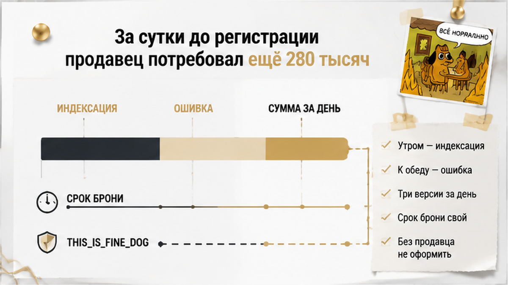

За сутки до подачи документов на регистрацию продавец по переуступке попросил ещё 280 тысяч — семья не доплатила, срок брони у застройщика вышел в свою дату, и квартиру взял другой покупатель. До этого неделя шла ровно и скучно, как и должна идти нормальная сделка: посмотрели исходный ДДУ, согласовали условия, внесли аванс цеденту, застройщик поставил лот в бронь. Вечерний звонок начался со слов «слушайте, у застройщика цены подросли, надо добить разницу» — а к утру то же самое называлось уже индексацией, к обеду — ошибкой в расчёте. Я разбирал эту цепочку по документам и скажу сразу, без интриги: рост витринного прайса у застройщика сам по себе не переписывает цену уже согласованной уступки. Здесь торговались не цифрой, а сроком — и это принципиально разные вещи.
Меня зовут Святослав Шакин, The Риэлтор, Тюмень. Разбираю новостройки и переуступки так, чтобы вы видели документ раньше, чем деньги. Свежие разборы — в Telegram: t.me/Tyumen_Rieltor. Удобнее в MAX — я здесь: max.ru/id561413315447_biz.
Началось всё максимально буднично. Та же секция, тот же дом, тот же срок сдачи — а ценник у первого дольщика заметно ниже, чем в отделе продаж застройщика. Такой разрыв на рынке не редкость: обзорные оценки скидки по уступкам обычно называют 10–15%, только это не правило и не гарантия, а просто разброс конкретных ситуаций. Семья съездила на площадку, вернулась домой, села на кухне с калькулятором и решила: берём.
И вот тут в разговорах проскакивает мимо главное. По переуступке вы покупаете не «квартиру со скидкой». Вы покупаете право требования к застройщику по уже заключённому договору долевого участия — то есть встаёте на место первого дольщика. С его сроком передачи ключей. С его площадью и отделкой. С его обязанностями по договору. Что в исходном ДДУ написано, то вы и получите: если там была задолженность по оплате или подписано допсоглашение о переносе срока, это тоже переезжает к вам вместе с правом.
Поэтому первый вопрос по такой квартире звучит не «сколько скидка», а «покажите исходный договор со всеми приложениями». Мы посмотрели. Там было чисто.
Дальше пошла обычная рабочая неделя. Сверили зарегистрированный ДДУ и допсоглашения, уточнили, оплачена ли цена договора первым дольщиком: по 214-ФЗ уступка возможна либо после полной оплаты, либо одновременно с переводом долга на нового участника. Проверили окно — уступать право можно с момента государственной регистрации ДДУ и до подписания передаточного акта, после акта это уже не «право», а объект. Отдельно смотрели, требуется ли согласие застройщика, и нет ли у продавца ипотеки, при которой понадобится ещё и банк. Похожую цепочку я разбирал в истории, где семейную ипотеку на новостройку одобрили, а эскроу так и не открыли.
Параллельно появились два платежа, и путать их нельзя. Первый — аванс продавцу по соглашению об уступке: это отношения покупателя и первого дольщика. Второй — бронирование лота у застройщика: отдельный документ, отдельный срок, обычно от нескольких дней до месяца. Бронь просто держит квартиру за вами на время оформления. Это не оплата квартиры и не счёт, на котором ваши деньги лежат до сдачи дома. Бронь, аванс и эскроу — три разные вещи, и название в шапке бумаги вообще ничего не решает: решают разделы про возврат и удержание.
Финал назначили на следующий день — подписание договора уступки и подача на регистрацию, госпошлина ориентировочно 350 рублей. Сделка считается завершённой не подписями сторон, а регистрацией. Ровно за сутки до этого продавец и позвонил.

Вечер накануне подачи документов. Голос в трубке спокойный, почти дружелюбный: «Слушайте, у застройщика цены подросли, надо добить разницу. Двести восемьдесят тысяч — и завтра подписываем». Не «давайте обсудим», не «у меня изменились обстоятельства». Новая цифра и пауза.
Семья к этому моменту неделю жила в режиме сделки: собранные справки, внесённый аванс, оплаченная бронь, отпросились с работы на завтра. И первая мысль у людей в такой момент всегда одна: потяну или не потяну.
Я предлагаю считать другое — не свой кошелёк, а бумагу. Если полная цена уступки записана в подписанном договоре, требование доплаты не возникает само по себе от того, что человек передумал: его смотрят по тексту, по порядку расчётов, по наличию условия об изменении цены. А если цена жила только в переписке, а в договоре стоит другая сумма или сумма «по исходному ДДУ» — доказывать согласованную скидку становится заметно тяжелее.
Отдельно про главный довод продавца: у застройщика подорожали такие же квартиры. Так бывает, и обидно ему по-человечески. Только рост витринного прайса не переписывает уже согласованную цену уступки — договор между цедентом и покупателем живёт своими условиями, а не прайс-листом отдела продаж.
Отсюда правило, о которое спотыкаются чаще всего: в договоре уступки указывают полную фактическую стоимость сделки, а не ту сумму, что когда-то прошла по исходному ДДУ. Когда часть денег в бумаге, а часть на словах, любой поздний торг превращается в спор без опоры.
К утру довод поменялся: «предусмотрена индексация». К обеду — «в расчёте была ошибка, цифру надо поправить». Три версии за полтора дня при одной и той же сумме.
Мыслей я читать не умею, но по практике скажу: когда основание меняется, а цифра стоит на месте, обсуждают не основание. Обсуждают сам факт доплаты.
Проверять при этом надо каждую версию, а не отмахиваться. Индексация и допсоглашения между первым дольщиком и застройщиком действительно влияют на передаваемые обязательства — но их читают в документах, а не слушают в трубке. Односторонней индексации в договоре уступки быть не должно, если стороны о ней не договаривались. Долг по исходному ДДУ, изменённая площадь, сдвинутый срок передачи — всё это видно по бумагам и меняет цену честно, а не задним числом накануне подачи.
Времени на спокойное чтение уже не оставалось. Бронь у застройщика идёт своим сроком и своими правилами: отделу продаж всё равно, кто из двух сторон прав. И движения нет вообще без согласия продавца — уступка односторонней не бывает. Похожее сжатие срока я разбирал в истории, где бронь сгорела накануне ДДУ из-за банка: цену там менял не продавец, а давление на решение было ровно таким же.
И само это давление — уже довод в пользу осторожности. Когда просят решить «до завтра» и одновременно третий раз меняют объяснение почему, спешить нужно в последнюю очередь.
Семья не доплатила. Не из принципа — посчитали ещё раз на кухне и поняли простое: если человек за сутки до оформления передумал насчёт цены, он с той же лёгкостью передумает насчёт сроков и бумаг. Муж отправил короткое сообщение: «Цена согласована, доплаты не будет, выходим на подписание на прежних условиях». Ответ пришёл почти через сутки: «Тогда не будем оформлять».
Дальше всё случилось тихо, без скандалов и суда. Продавец на подписание не вышел и документы не дал — без него уступку не оформить, односторонней она не бывает. Срок брони у застройщика закончился в свою дату: отделу продаж всё равно, договорились две стороны или поссорились. Лот вернулся в продажу и через несколько дней ушёл другому покупателю.
«Сделки, которую почти успели», не существовало вообще. Пока договор уступки не прошёл государственную регистрацию, покупатель по бумагам не участник долевого строительства. Подписи двух людей — это ещё не переход права.
Хуже всего вышло с авансом — и не потому, что деньги точно пропали. Ответ зависел от текста соглашения, который никто не читал внимательно на старте. Где-то такой платёж возвращают полностью, где-то удерживают часть, где-то стороны месяцами спорят, по чьей вине сорвалось. «Аванс всегда вернут» и «аванс всегда сгорает» — обе фразы неправда: решает бумага, а не чувство справедливости.
Есть и обратная сторона, про которую покупатели редко знают. Первый дольщик отвечает за то, что передаёт: Верховный Суд 4 декабря 2025 года по делу № 309-ЭС25-7212 подтвердил, что при существенном расхождении характеристик объекта требования предъявляют именно к цеденту. Только доказывать это придётся уже после денег, а не до них.
Продавец по переуступке поднял цену накануне ДДУ: вы бы доплатили 280 тысяч, чтобы не потерять бронь, или отпустили квартиру, даже если аванс может сгореть?
Переуступка не страшнее прямой покупки у застройщика. Она просто длиннее на одно звено: между вами и стройкой стоит живой человек со своими планами. Вот восемь мест, где обычно и рвётся, — я прошу показать их до любого платежа.
| Что проверяем | Где смотреть | Чем грозит пропуск |
|---|---|---|
| Исходный ДДУ и все допсоглашения | Зарегистрированные экземпляры продавца | Срок передачи, площадь и отделка окажутся не теми, что обещали на словах |
| Оплачена ли цена по ДДУ | Справка застройщика о расчётах | Уступка возможна после оплаты либо с переводом долга — иначе оформление встанет |
| Полная цена уступки | Отдельный пункт договора цессии, а не сумма по ДДУ | Ровно этот случай: цена «была», но не в бумаге — и её меняют накануне |
| Согласие застройщика | Условия исходного ДДУ | Стороны договорились, а сделку не регистрируют |
| Ипотека и залог у продавца | Выписка и согласие банка | Право заложено — переход тормозится без банка |
| Порядок расчётов и возврата | Раздел о платеже и его удержании | Спор об авансе без ответа в документе |
| Условие об индексации | Текст договора уступки | Односторонняя доплата выглядит «законной» |
| Срок брони и его конец | Бланк бронирования у застройщика | Лот уходит, пока стороны выясняют отношения |
И ещё одна привычка, которая экономит больше всего нервов: сохраняйте переписку о согласованной цене. Скрин из мессенджера договор не заменяет, но тему поздней доплаты закрывает быстрее любых доводов. Отдельно посмотрите, что происходит после регистрации: на финише решает комплект документов, а сроки по дому живут своей жизнью, отдельно от вашего графика.
Разбираю такие цепочки по документам — до денег и без «давайте быстрее». Telegram: t.me/Tyumen_Rieltor, MAX: max.ru/id561413315447_biz. Пришлите ДДУ и проект уступки — посмотрим спорные пункты вместе.
Что стоило сделать заранее? Три вещи, и все скучные. Полная цена уступки — в подписанном договоре, до аванса и до брони. Ни рубля цеденту, пока порядок расчётов и условия возврата не лежат на бумаге. И спокойное понимание, что срок брони идёт своим ходом: его не дожать доплатой и не растянуть уговорами.
Новостройки в Тюмени по переуступке берут — и берут удачно, дешевле витрины. Выигрывает не тот, кто быстрее внёс аванс, а тот, кто до денег прошёл всю цепочку документов. Работы там на два-три дня, зато после неё чужое «а давайте ещё 280 тысяч» перестаёт быть вашей проблемой.